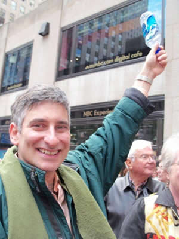
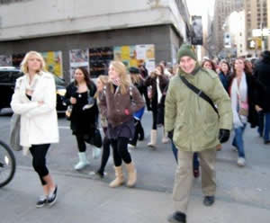

Custom Tours » Step-On Tours

Tour Operators, Bus Companies, Tour Companies, and Cruise Lines trust Jared The NYC Tour Guide®Goldstein and his expert licensed associate guides. Jared Goldstein is their man in NYC.
Jared's clients don't worry because Jared helps them plan and deliver great experiences. Plan with Jared to avoid pitfalls, and wastes of time and money. But when the unexpected occurs, you don't just get professionalism, but heroic customer service.
Jared comes from a small business family, and he understands the care, work, and worry that goes into building, running, and growing your business. Jared keeps the lines of communication open and checks in to put you at ease that your tour is going great. If something comes up, Jared handles it and keeps you posted.
You get great value going with Jared The NYC Tour Guide®Goldstein and his associates.
About Jared The NYC Tour Guide®Goldstein
Jared has been giving NYC tours since 1985 when he volunteered as a tour guide for Columbia University, and his visiting friends and family. Jared became a professional licensed New York City Sight-seeing Guide in 2006. His elite score earned him a star. Since then, Jared has developed tours for walking and bus tour companies, itineraries, new products, and business development.
Jared fell in love with NYC when he would come into town with his parents to visit his 'little brother,' actually it wasn't another boy, but Joe Goldstein Public Relations, his parents' boutique sports public relations company that publicized the Chase Bank New York City Marathon, Mobil Track and Field Championships, Bob Hope's Desert Classic, Colgate Dinah Shore Golf Tournament, the United States Trotting Association, Evil Knievel, ESPN, Madison Square Garden, Joe Frazier, the Saudi Arabian World Cup Team, and more. The company's namesake, Joe Goldstein, was a creative promoter who brokered partnerships between sponsors, athletic talent, and corporations.
Jared's father had unparalleled relationships with the media and the athletes. That is why his name was synonymous, actually eponymous, with the business name. You were getting my father's dedication, networks, connections, and creativity. Jared's mother, Helene, handled relationships with the clients, whom she cared for, developed and made sure they gladly paid. Jared's parents were Manhattanites at heart who instilled NYC pride into Jared as they told him stories of the city and their lives in NYC since the 1940s, and their grandparents who were here since the 19th Century.
My approach to your satisfaction through wowing your passengers
My family worked hard and went far. I'm walking in some big shoes, but every day I learn from my parents' examples. I'm sharing this with you because these are my heritages: Great Service. Small business. Client Relationships. Satisfaction. Repsonsive. Above and beyond. Making you look good. Thrilling your clients (in a good way). Creating great experiences. Ethics. Partnership.
My business, which is also eponymous with my name, Jared Goldstein, is only as good as my latest tour. I love NYC and I strive to improve my knowledge and tour-giving skills, which get great reviews. I have a network of other great guides who are passionate about NYC touring, who have great skills, are smart and knowledgeable, fun and funny.
With me, Jared The NYC Tour Guide®Goldstein, your passengers get a great experience, and you get a dedicated partner in NYC.

Tour Length: 3 hours, 4 hours, or more!
To book a tour please fill out our Book Your Tour form and reference "Step-On Tours". Alternately you may call Jared at (917) 533-1057.